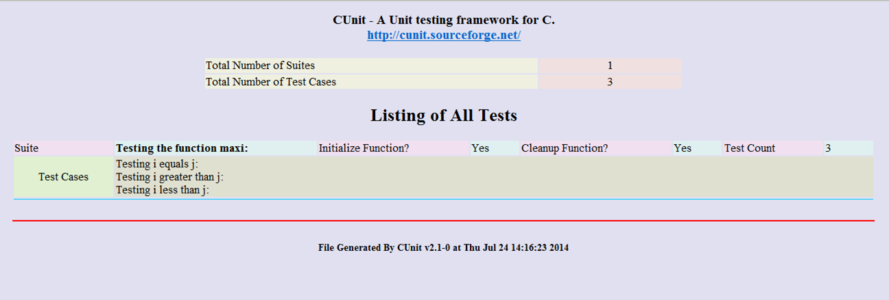
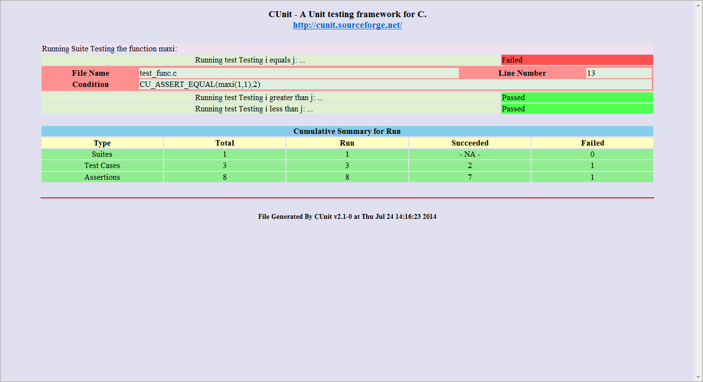

CUnit测试工具¶
简介¶
CUnit是一个c语言的单元测试框架，它是以静态链接库的形式，连接到用户代码中的，主要的功能就是提供了语义丰富的断言和多种测试结果输出接口，可以方便地生成测试报告。
数据类型和函数在如下文件用为标准用户定义：
- #include <CUnit/CUnit.h> 在用户的测试中使用的断言宏和包含其他的框架头文件。
- #include <CUnit/CUError.h> 错误处理函数和数据类型，CUnit.h会自动包含此文件。
- #include <CUnit/TestDB.h> 测试注册簿，测试包和测试的数据类型和函数的定义。CUnit.h会自动包含此文件
- #include <CUnit/TestRun.h> 运行的是和处理结果的数据类型和函数的定义。CUnit.h会自动包含此文件
- #include <CUnit/Automated.h> 自动生成XML文件模式接口定义.
- #include <CUnit/Basic.h> 无交互的输出到stdout的基本测试模式接口定义。
- #include <CUnit/Console.h> 与控制台交互模式接口定义.
- #include <CUnit/CUCurses.h> Curses 图形用户界面交互接口定义.
- #include <CUnit/Win.h> Windows 接口定义(尚未实现).
CUnit框架的一个典型的使用顺序为（实例详见服务器中例程）：
- 为测试编写函数(如果需要的话编写测试包的 init/cleanup 函数)
- 初始化测试注册簿 - CU_initialize_registry()
- 添加测试包到测试注册簿 - CU_add_suite()
- 添加测试用例到的是测试包 - CU_add_test()
- 用适当的接口函数运行测试, 例如 CU_console_run_tests
- 清理测试注册簿 - CU_cleanup_registry
安装配置¶
Ubuntu¶
软件源中与cunit相关的包有:
libcunit1 libcunit1-dev libcunit1-doc libcunit1-ncurses libcunit1-ncurses-dev
使用apt-get install安装即可。
从源码编译¶
下载地址： https://sourceforge.net/projects/cunit/files/latest/download
步骤:
下载CUnit源码包(假设是2.1.0版本)
- CUnit源码包的解压
#tar xzvf CUnit-2.1-0-src.tar.gz
执行结束后，将会在当前目录下生成一个解压后的文件夹（CUnit-2.1-0）。
解压结束后，开始进行编译和安装.
- tar xf CUnit-2.1-3.tar.bz2
- cd CUnit-2.1-3
- libtoolize -f -c -i
- aclocal
- autoconf
- autoheader
- automake
- chmod u+x configure
- ./configure –prefix=/usr/local
- make
- make install
也可以使用jam编译:
1. Set the working directory to the top of the source tree
2. Generate Jamrules
a. On Linux, run autoconf & configure
b. On Windows, copy Jamrules.in to Jamrules
3. Edit the top section of Jamrules to match your preferences
4. jam -f Jambase install
输出方式¶
CUnit 提供测试包和测试用例运行控制的原始函数，但是大部分用户想使用简化的接口。这些接口处理用户与框架交互的细节，并且提供像测试输出和结果给客户。
在CUnit 库中有如下接口:
| 接口 | 平台 | 描述 |
|---|---|---|
| Automated | All | 非交互式输出XML文件 |
| Basic | All | 非交互式可选输出到stdout |
| Console | All | 控制台交互方式，在用户的控制下运行 |
| Curses | Linux/Unix | Curses交互在用户控制下运行 |
如果这些接口不足以满足用户的需求，用户也可以使用在<CUnit/TestRun.h>中定义的原始框架API。可以从原代码中看到各种各样的接口函数。在此简单介绍自动模式：
自动模式接口是非交互式的接口，客户端启动一次测试，测试结果将会输出的到一个XML文件当中。对于一组已注册的测试包和测试用例也可以将报告输出到一个XML文件当中。
自动模式接口 API有下面几个函数构成：
void CU_automated_run_tests(void)¶
运行所有注册测试包的所有测试用例。测试结果将输出到一个名为TestMax-Results.xml的文件。文件名中的ROOT可以通过CU_set_output_filename()函数设置，默认的名字为CUnitAutomated-Results.xml。如果每次测试没有设置ROOT文件名，新的测试结果将会覆盖上一次测试结果。
测试结果文件也可以是dtd文件（CUnit-Run.dtd）和XSL文件（CUnit-Run.xsl）。在代码的子目录和安装树中可以找到。
CU_ErrorCode CU_list_tests_to_file(void)¶
把注册的测试包和测试用例列表输出到文件。输出文件的名字为TestMax-Listing.xml。文件名中的ROOT可以通过CU_set_output_filename()函数设置否则为CUnitAutomated。如果每次测试没有设置ROOT文件名，新的列表将会覆盖上一次的列表。
测试结果文件也可以是dtd文件（CUnit-Run.dtd）和XSL文件（CUnit-Run.xsl）。在代码的子目录和安装树中可以找到。
列表文件不会再调用CU_automated_run_tests()后自动生成，客户端代码必须在需要时显式的申请。
void CU_set_output_filename(const char* szFilenameRoot)¶
设置测试结果和文件列表输出文件的名字。szFilenameRoot 再加上-Results.xml或-Listing.xml,构成输出文件的名字。这两个文件是不能直接观看的，要查看这两个文件，需要使用如下xsl和dtd文件：CUnit-List.dtd和CUnit-List.xsl用于解析列表文件，CUnit-Run.dtd和CUnit-Run.xsl用于解析结果文件。这四个文件在CUnit包里面有提供，安装之后在$(PREFIX)/share/CUnit目录下，默认安装的话在/home/安装目录/share/CUnit目录下。在查看结果之前，需要把这六 个文件：TestMax-Listing.xml, TestMax-Results.xml, CUnit-List.dtd, CUnit-List.xsl, CUnit-Run.dtd, CUnit-Run.xsl拷贝到一个目录下，然后用浏览器打开两个结果的xml文件就可以了。
如下图所示：
 断言¶
CUnit提供一组断言来测试逻辑条件.断言的成功与失败会被框架跟踪并且在测试运行完成后可以在报告中查看结果。
CUnit的断言定义如下：
#include <CUnit/CUnit.h>
| 断言 | 说明 |
|---|---|
CU_ASSERT(int expression)
CU_ASSERT_FATAL(int expression)
CU_TEST(int expression)
CU_TEST_FATAL(int expression)
|
断言 expression 为 TRUE (非零) |
CU_ASSERT_TRUE(value)
CU_ASSERT_TRUE_FATAL(value)
|
断言 value 为 TRUE (非零) |
CU_ASSERT_FALSE(value)
CU_ASSERT_FALSE_FATAL(value)
|
断言 value 为 FALSE (零) |
CU_ASSERT_EQUAL(actual, expected)
CU_ASSERT_EQUAL_FATAL(actual, expected)
|
断言actual = = expected |
CU_ASSERT_NOT_EQUAL(actual, expected))
CU_ASSERT_NOT_EQUAL_FATAL(actual, expected)
|
断言actual != expected |
CU_ASSERT_PTR_EQUAL(actual, expected)
CU_ASSERT_PTR_EQUAL_FATAL(actual, expected)
|
断言pointers actual = = expected |
CU_ASSERT_PTR_NOT_EQUAL(actual, expected)
CU_ASSERT_PTR_NOT_EQUAL_FATAL(actual, expected)
|
断言pointers actual != expected |
CU_ASSERT_PTR_NULL(value)
CU_ASSERT_PTR_NULL_FATAL(value)
|
断言pointer value == NULL |
CU_ASSERT_PTR_NOT_NULL(value)
CU_ASSERT_PTR_NOT_NULL_FATAL(value)
|
断言pointer value != NULL |
CU_ASSERT_STRING_EQUAL(actual, expected)
CU_ASSERT_STRING_EQUAL_FATAL(actual, expected)
|
断言strings actual and expectedare equivalent |
CU_ASSERT_STRING_NOT_EQUAL(actual, expected)
CU_ASSERT_STRING_NOT_EQUAL_FATAL(actual, expected)
|
断言strings actual and expected differ |
CU_ASSERT_NSTRING_EQUAL(actual, expected, count)
CU_ASSERT_NSTRING_EQUAL_FATAL(actual, expected, count)
|
断言actual 的前面count个字符 与expected相同 |
CU_ASSERT_NSTRING_NOT_EQUAL(actual, expected, count)
CU_ASSERT_NSTRING_NOT_EQUAL_FATAL(actual, expected, count)
|
断言actual 的前面count个字符与expected 不同 |
CU_ASSERT_DOUBLE_EQUAL(actual, expected, granularity)
CU_ASSERT_DOUBLE_EQUAL_FATAL(actual, expected, granularity)
|
断言 |actual - expected| <= |granularity| 数学库必须连接到程序当中 |
CU_ASSERT_DOUBLE_NOT_EQUAL(actual, expected, granularity)
CU_ASSERT_DOUBLE_NOT_EQUAL_FATAL(actual, expected, granularity)
|
断言 |actual - expected| > |granularity| 数学库必须连接到程序当中 |
CU_PASS(message)
|
注册一个带有消息的通过断言,在没有逻辑测试运行时 |
CU_FAIL(message)
CU_FAIL_FATAL(message)
|
注册一个带有消息的失败断言,在没有逻辑测试运行时 |
错误处理¶
大多数CUnit函数设置一个错误代码用来指示框架的错误状态。有些函数返回错误代码，其他的则设置错误代码返回其他值。框架提供两个函数用来检查框架的错误状态:
CU_ErrorCode CU_get_error(void)
const char* CU_get_error_msg(void)
第一个函数返回错误代码本身，第二个函数返回一个描述错误状态的消息。错误代码是一个在<CUnit/CUError.h>中定义的枚举类型CU_ErrorCode。下面是错误代码值的定义：
| 错误代码的值 | 描述 |
|---|---|
| CUE_SUCCESS | 没有错误. |
| CUE_NOMEMORY | 内存分配失败 |
| CUE_NOREGISTRY | 测试注册簿未初始化 |
| CUE_REGISTRY_EXISTS | 在没有调用CU_cleanup_registry()函数的情况下试图调用CU_set_registry()函数 |
| CUE_NOSUITE CU_pSuite | 指针是NULL. |
| CUE_NO_SUITENAME | CU_Suite名字未指定 |
| CUE_SINIT_FAILED | 测试包初始化失败 |
| CUE_SCLEAN_FAILED | 测试包清理错误 |
| CUE_DUP_SUITE | 测试包重名 |
| CUE_NOTEST | CU_pTest 指针是NULL. |
| CUE_NO_TESTNAME | CU_Test 名字未指定 |
| CUE_DUP_TEST | 测试用例重名 |
| CUE_TEST_NOT_IN_SUITE | 测试用例没有注册到指定的测试包中 |
| CUE_FOPEN_FAILED | 文件打开失败 |
| CUE_FCLOSE_FAILED | 文件关闭失败 |
| CUE_BAD_FILENAME | 错误的文件名 (NULL,空,不存在, 等等.). |
| CUE_WRITE_ERROR | 写文件错误 |